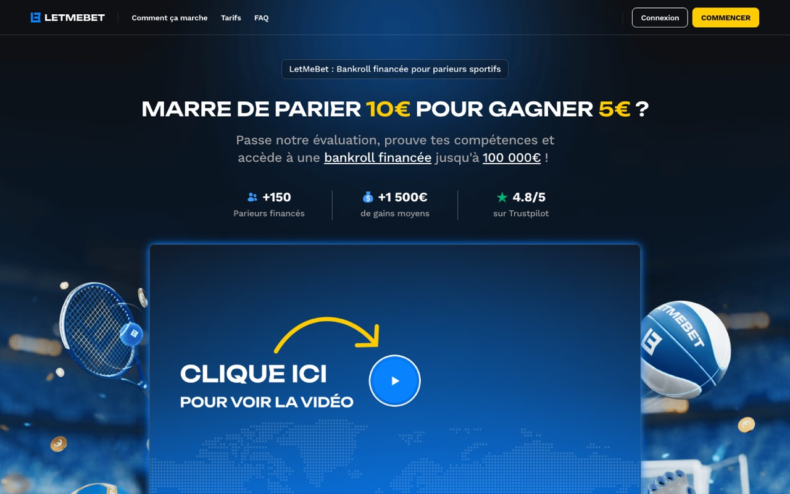

Étude de cas · produit en production
LetMeBet
Une plateforme de challenges de paris sportifs à capital virtuel, construite de la conception produit à la mise en production.
100+Endpoints
250+Tests
Temps réelCotes multi-sports

Le problème
Le produit devait réunir une expérience de challenge grand public, des cotes multi-sports mises à jour en temps réel et un parcours de financement contrôlé.
J'ai travaillé sur l'interface, le serveur et les données : WebSocket, KYC, paiements, système de jokers et outillage de mise en production.
- Next.js, TypeScript, Prisma et PostgreSQL.
- Flux temps réel pour les cotes multi-sports.
- Une base de tests couvrant les parcours critiques.